1. Goku
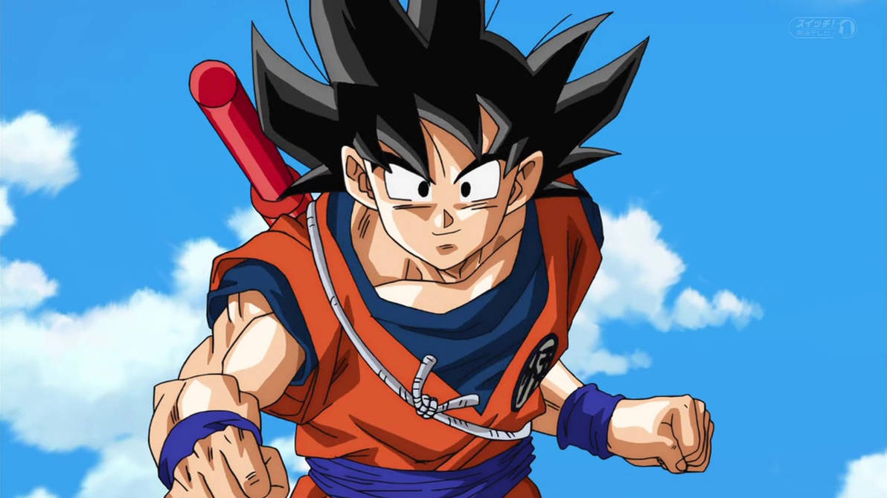
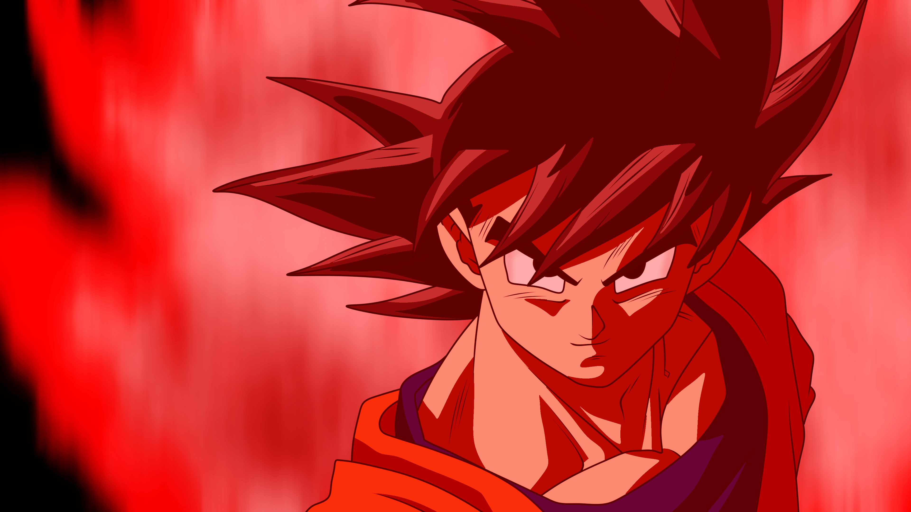

-Là nhân vật trung tâm của toàn bộ series Dragon Ball, Goku đại diện cho tinh thần không ngừng vượt qua giới hạn. Anh từng liều mạng dùng Kaioken, đạt tới trạng thái thần thánh Ultra Instinct sau khi bị dồn đến bước đường cùng.
- Trong game, Goku được thiết kế đúng tinh thần ấy: có thể hy sinh máu để tăng sát thương (Kaioken), và hóa thân thành trạng thái né đòn gần như tuyệt đối (UI) khi đã "tỉnh ngộ".
2. Vegeta
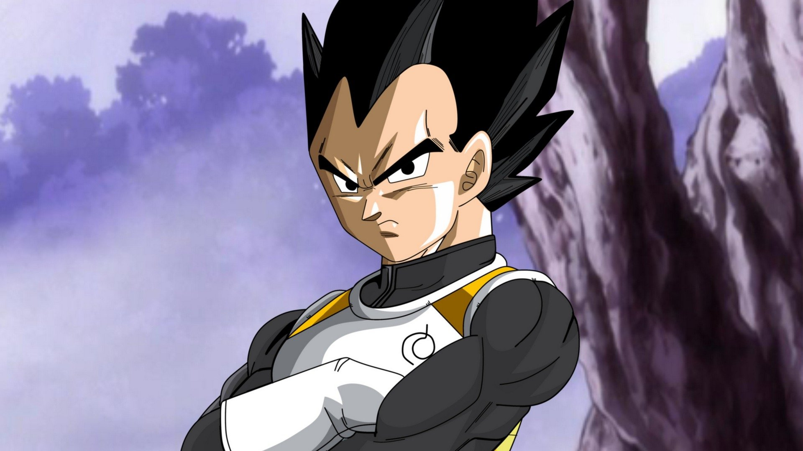
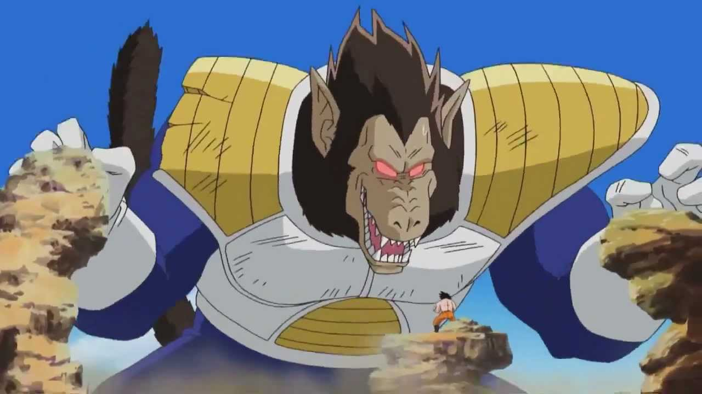

- Niềm kiêu hãnh hoàng tộc, ý chí vươn lên từ thất bại là những gì định nghĩa Vegeta. Từng là đối thủ của Goku, nhưng về sau anh trở thành chiến binh luôn âm thầm mạnh mẽ vì gia đình. Vegeta không dễ từ bỏ, kể cả khi phải đánh đổi cả mạng sống.
- Trong game, Vegeta là một chiến binh giàu sát thương, có khả năng hồi sinh hoặc hút máu sau khi hi sinh, thể hiện tinh thần "ngã xuống để trở lại mạnh hơn". Biến hình Oozaru giúp anh bùng nổ sức mạnh trong thời gian ngắn.
3. Piccolo
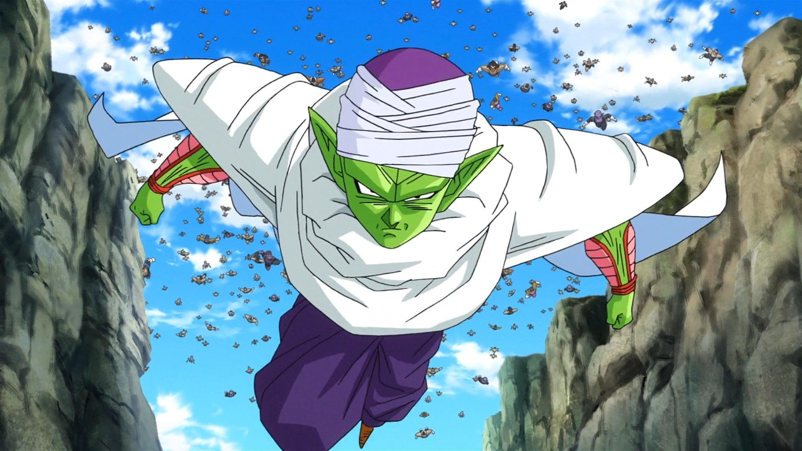
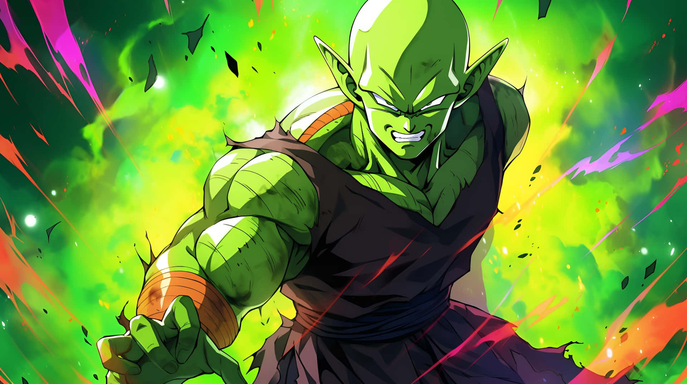
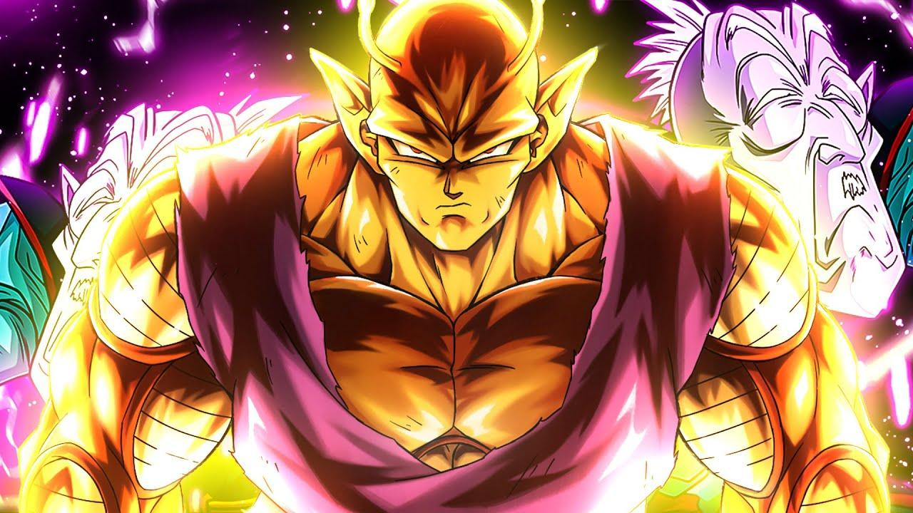
- Từ một ác nhân, Piccolo trở thành một trong những người bảo vệ đáng tin cậy nhất. Anh thông minh, điềm tĩnh, luôn chiến đấu hết mình vì Gohan và Trái Đất. Trong các trận chiến, Piccolo là người giữ vai trò hỗ trợ, che chắn và phân tích tình huống.
- Trong game, Piccolo có lượng HP cao, có thể hồi phục, phản sát thương và triệu hồi phân thân để chiến đấu – đúng như cách anh hỗ trợ đồng đội và sẵn sàng hy sinh vì mục tiêu lớn hơn.
4. Broly
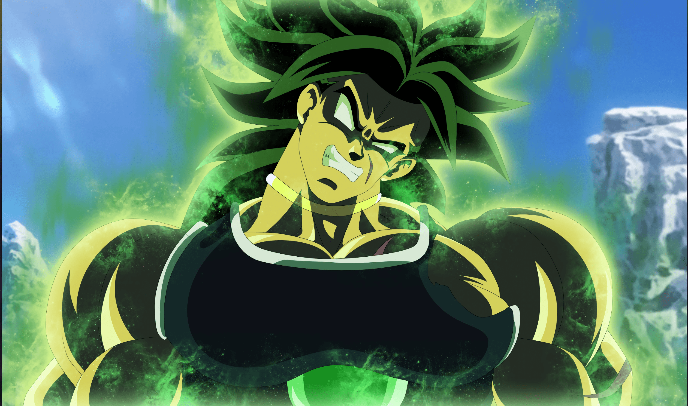
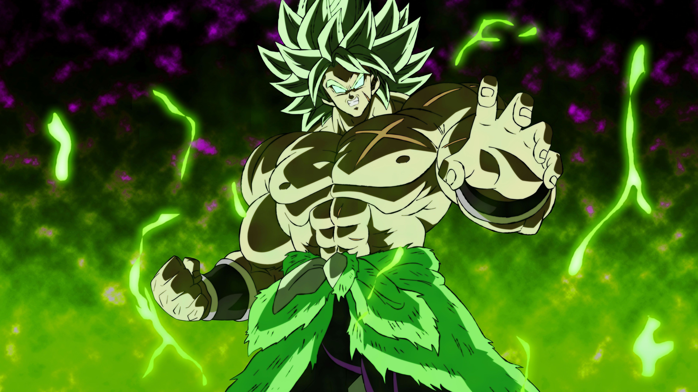
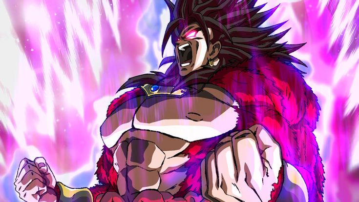
- Broly là hiện thân của cơn thịnh nộ bị dồn nén. Sinh ra với sức mạnh vượt trội, nhưng không kiểm soát được, Broly thường chiến đấu như một cơn bão hoang dại – vừa đáng sợ, vừa bi thương. Trong các phiên bản hiện đại, anh dần kiểm soát được bản thân hơn.
- Trong game, Broly càng bị đánh càng mạnh, kỹ năng bộc phát khi HP thấp và biến hình SSJ4 giúp anh trở thành cỗ máy hủy diệt có thể hồi máu và gây sát thương vùng.
5. Gohan
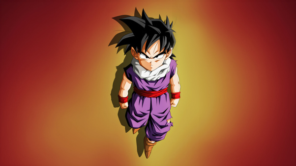
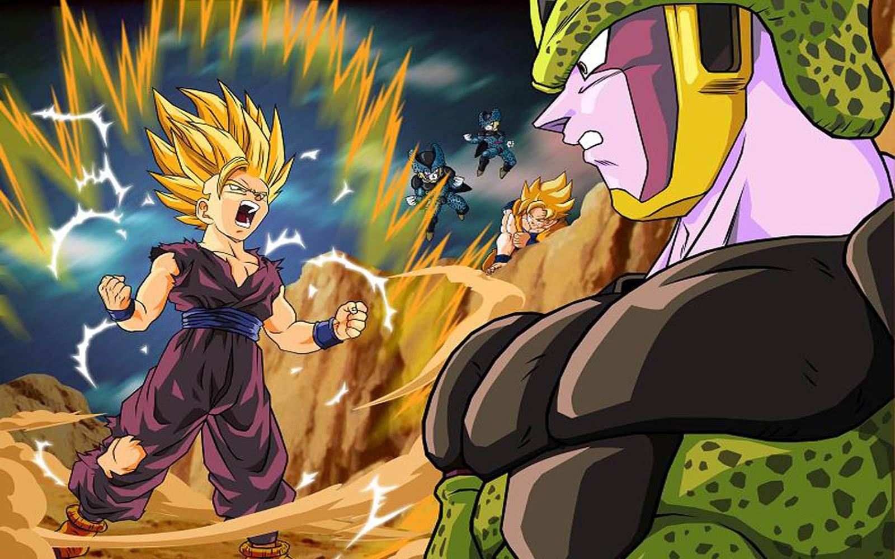
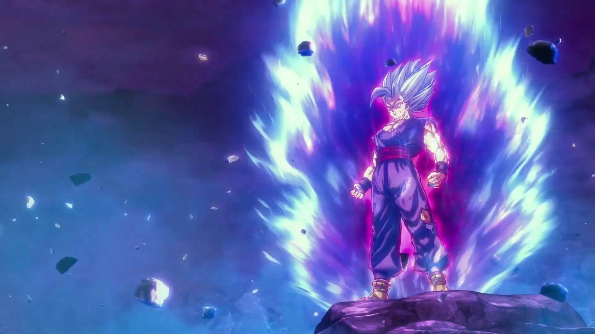
- Là con trai của Goku, Gohan là chiến binh tiềm năng bậc nhất, từng vượt qua cha mình ở thời điểm còn nhỏ. Tuy nhiên, Gohan thường bị giằng xé giữa cuộc sống bình thường và chiến đấu. Mỗi lần rơi vào nghịch cảnh, Gohan lại bộc lộ sức mạnh khủng khiếp.
- Trong game, Gohan có 4 trạng thái biến hình tùy vào lượng máu – phản ánh đúng tính cách và diễn biến nội tâm phức tạp của anh. Khi bị dồn ép, Gohan càng trở nên nguy hiểm hơn với kỹ năng phản đòn và ultimate mang tính kết liễu.